<html><head>  <title>Plot Type: Bar Graph - ScottPlot 4.1 Cookbook</title>  <link href=https://cdn.jsdelivr.net/npm/bootstrap@5.1.3/dist/css/bootstrap.min.css rel=stylesheet></head><body class=bg-light>  <div class='container' style='max-width:1000px'>    <div class='my-4'><code>THIS PAGE IS FOR TESTING ONLY</code></div>    <div class='display-4'>Plot Type: Bar Graph - ScottPlot 4.1 Cookbook</div>    <div class='fs-5'><i>How to create bar charts using ScottPlot.</i></div>    <article class='bg-light shadow rounded my-5'>    <div class='p-3 rounded bg-white'>      This page contains recipes for the <i>Bar Graph</i> category.<br>Visit the <a href='../../index.dev.html'>Cookbook Home Page</a> to view all cookbook recipes.
<h3 class='mt-5' id='bar-graph'>Bar Graph</h3>
<div>A simple bar graph can be created from a series of values. By default values are palced at X positions 0, 1, 2, etc.</div>
<pre class='bg-light border rounded p-3'>var plt = new ScottPlot.Plot(600, 400);

// create sample data
double[] values = { 26, 20, 23, 7, 16 };

// add a bar graph to the plot
plt.AddBar(values);

// adjust axis limits so there is no padding below the bar graph
plt.SetAxisLimits(yMin: 0);

plt.SaveFig("bar_quickstart.png");</pre>


<h3 class='mt-5' id='bar-graph-with-defined-positions'>Bar Graph with Defined Positions</h3>
<div>Horizontal positions for each bar can be defined manually. If you define bar positions, you will probably want to define the bar width as well.</div>
<pre class='bg-light border rounded p-3'>var plt = new ScottPlot.Plot(600, 400);

// create sample data
double[] values = { 26, 20, 23, 7, 16 };
double[] positions = { 10, 20, 30, 40, 50 };

// add a bar graph to the plot
var bar = plt.AddBar(values, positions);

// customize the width of bars (80% of the inter-position distance looks good)
bar.BarWidth = (positions[1] - positions[0]) * .8;

// adjust axis limits so there is no padding below the bar graph
plt.SetAxisLimits(yMin: 0);

plt.SaveFig("bar_positions.png");</pre>


<h3 class='mt-5' id='bar-labels'>Bar Labels</h3>
<div>Bars placed at specific positions can be labeled by setting tick labels for those positions.</div>
<pre class='bg-light border rounded p-3'>var plt = new ScottPlot.Plot(600, 400);

double[] values = { 26, 20, 23, 7, 16 };
double[] positions = { 0, 1, 2, 3, 4 };
string[] labels = { "PHP", "JS", "C++", "GO", "VB" };
plt.AddBar(values, positions);
plt.XTicks(positions, labels);
plt.SetAxisLimits(yMin: 0);

plt.SaveFig("bar_labels.png");</pre>
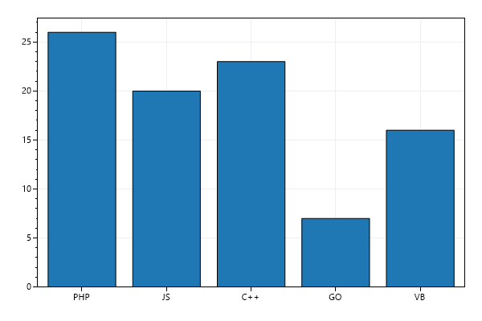

<h3 class='mt-5' id='bar-graph-with-error-bars'>Bar Graph with Error Bars</h3>
<div>Errorbars can be added to any bar graph.</div>
<pre class='bg-light border rounded p-3'>var plt = new ScottPlot.Plot(600, 400);

// add a bar graph to the plot
double[] values = { 26, 20, 23, 7, 16 };
var bar = plt.AddBar(values);

// add errorbars to the bar graph and customize styling as desired
double[] errors = { 3, 2, 5, 1, 3 };
bar.ValueErrors = errors;
bar.ErrorCapSize = .1;

// adjust axis limits so there is no padding below the bar graph
plt.SetAxisLimits(yMin: 0);

plt.SaveFig("bar_error.png");</pre>
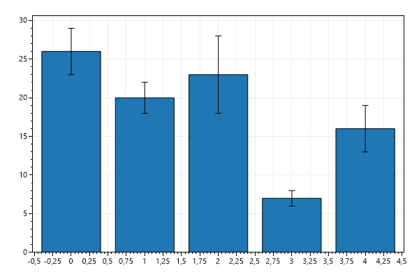

<h3 class='mt-5' id='stacked-bar-graphs'>Stacked Bar Graphs</h3>
<div>Bars can be overlapped to give the appearance of stacking.</div>
<pre class='bg-light border rounded p-3'>var plt = new ScottPlot.Plot(600, 400);

// create sample data
double[] valuesA = { 1, 2, 3, 2, 1, 2, 1 };
double[] valuesB = { 3, 3, 2, 1, 3, 2, 1 };

// to simulate stacking B on A, shift B up by A
double[] valuesB2 = new double[valuesB.Length];
for (int i = 0; i < valuesB.Length; i++)
    valuesB2[i] = valuesA[i] + valuesB[i];

// plot the bar charts in reverse order (highest first)
plt.AddBar(valuesB2);
plt.AddBar(valuesA);

// adjust axis limits so there is no padding below the bar graph
plt.SetAxisLimits(yMin: 0);

plt.SaveFig("bar_stacked.png");</pre>
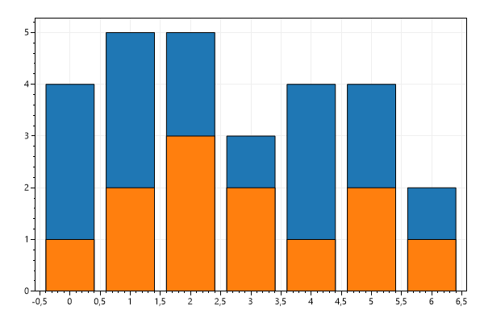

<h3 class='mt-5' id='values-above-bars'>Values Above Bars</h3>
<div>The value of each bar can be displayed above it.</div>
<pre class='bg-light border rounded p-3'>var plt = new ScottPlot.Plot(600, 400);

// create sample data
double[] values = { 27.3, 23.1, 21.2, 16.1, 6.4, 19.2, 18.7, 17.3, 20.3, 13.1 };

// add a bar graph to the plot and enable values to be displayed above each bar
var bar = plt.AddBar(values);
bar.ShowValuesAboveBars = true;

// adjust axis limits so there is no padding below the bar graph
plt.SetAxisLimits(yMin: 0);

plt.SaveFig("bar_values.png");</pre>


<h3 class='mt-5' id='customizing-value-label-font'>Customizing Value Label Font</h3>
<div>Font styling for bar value labels can be customized.</div>
<pre class='bg-light border rounded p-3'>var plt = new ScottPlot.Plot(600, 400);

double[] values = { 27.3, 23.1, 21.2, 16.1, 6.4, 19.2, 18.7, 17.3, 20.3, 13.1 };

var bar = plt.AddBar(values);
bar.ShowValuesAboveBars = true;
bar.Font.Color = Color.Green;
bar.Font.Size = 18;
bar.Font.Bold = true;

plt.SetAxisLimits(yMin: 0);

plt.SaveFig("bar_values_custom_font.png");</pre>
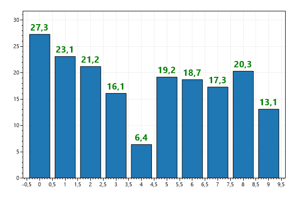

<h3 class='mt-5' id='custom-value-formatter'>Custom Value Formatter</h3>
<div>A custom formatter can be used to generate labels above each bar using the numeric value of the bar itself.</div>
<pre class='bg-light border rounded p-3'>var plt = new ScottPlot.Plot(600, 400);

Func<double, string> customFormatter = y => $"Y={y:N2}";

double[] values = { 27.3, 23.1, 21.2, 16.1, 6.4, 19.2, 18.7, 17.3, 20.3, 13.1 };
var bar = plt.AddBar(values);
bar.ShowValuesAboveBars = true;
bar.ValueFormatter = customFormatter;

plt.SetAxisLimits(yMin: 0);

plt.SaveFig("bar_values_custom_formatter.png");</pre>


<h3 class='mt-5' id='bar-fill-pattern'>Bar Fill Pattern</h3>
<div>Bar graph fill pattern can be customized.</div>
<pre class='bg-light border rounded p-3'>var plt = new ScottPlot.Plot(600, 400);

var bar1 = plt.AddBar(new double[] { 10, 13, 15 }, new double[] { 1, 5, 9 });
bar1.HatchStyle = Drawing.HatchStyle.StripedUpwardDiagonal;
bar1.FillColor = Color.Gray;
bar1.FillColorHatch = Color.Black;
bar1.Label = "Series 1";

var bar2 = plt.AddBar(new double[] { 14, 15, 9 }, new double[] { 2, 6, 10 });
bar2.HatchStyle = Drawing.HatchStyle.StripedWideDownwardDiagonal;
bar2.FillColor = Color.DodgerBlue;
bar2.FillColorHatch = Color.DeepSkyBlue;
bar2.Label = "Series 2";

var bar3 = plt.AddBar(new double[] { 13, 6, 14 }, new double[] { 3, 7, 11 });
bar3.HatchStyle = Drawing.HatchStyle.LargeCheckerBoard;
bar3.FillColor = Color.SeaGreen;
bar3.FillColorHatch = Color.DarkSeaGreen;
bar3.Label = "Series 3";

// add a legend to display each labeled bar plot
plt.Legend(location: Alignment.UpperRight);

// adjust axis limits so there is no padding below the bar graph
plt.SetAxisLimits(yMin: 0, yMax: 20);

plt.SaveFig("bar_pattern.png");</pre>
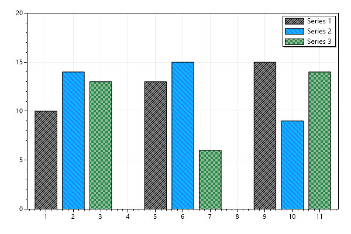

<h3 class='mt-5' id='horizontal-bar-graph'>Horizontal Bar Graph</h3>
<div>Bar graphs are typically displayed as columns, but it's possible to show bars as rows.</div>
<pre class='bg-light border rounded p-3'>var plt = new ScottPlot.Plot(600, 400);

// create sample data
double[] values = { 26, 20, 23, 7, 16 };
double[] errors = { 3, 2, 5, 1, 3 };
double[] positions = { 1, 2, 3, 4, 5 };

// add a bar graph to the plot and customize it to render horizontally
var bar = plt.AddBar(values, errors, positions);
bar.Orientation = Orientation.Horizontal;

// adjust axis limits so there is no padding to the left of the bar graph
plt.SetAxisLimits(xMin: 0);

plt.SaveFig("bar_horizontal.png");</pre>
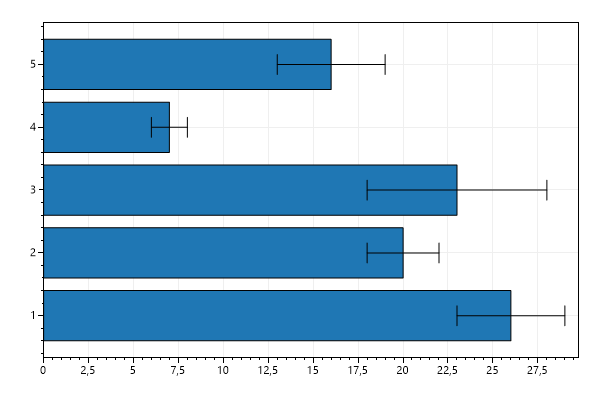

<h3 class='mt-5' id='grouped-bar-graphs'>Grouped Bar Graphs</h3>
<div>By customizing positions of multiple bar plots you can achieve the appearance of grouped bar graphs. The AddBarGroups() method is designed to simplify this process. More advanced grouping and bar plot styling is possible using the Population plot type.</div>
<pre class='bg-light border rounded p-3'>var plt = new ScottPlot.Plot(600, 400);

// generate random data to plot
int groupCount = 5;
Random rand = new(0);
double[] values1 = DataGen.RandomNormal(rand, groupCount, 20, 5);
double[] values2 = DataGen.RandomNormal(rand, groupCount, 20, 5);
double[] values3 = DataGen.RandomNormal(rand, groupCount, 20, 5);
double[] errors1 = DataGen.RandomNormal(rand, groupCount, 5, 2);
double[] errors2 = DataGen.RandomNormal(rand, groupCount, 5, 2);
double[] errors3 = DataGen.RandomNormal(rand, groupCount, 5, 2);

// group all data together
string[] groupNames = { "Group A", "Group B", "Group C", "Group D", "Group E" };
string[] seriesNames = { "Series 1", "Series 2", "Series 3" };
double[][] valuesBySeries = { values1, values2, values3 };
double[][] errorsBySeries = { errors1, errors2, errors3 };

// add the grouped bar plots and show a legend
plt.AddBarGroups(groupNames, seriesNames, valuesBySeries, errorsBySeries);
plt.Legend(location: Alignment.UpperRight);

// adjust axis limits so there is no padding below the bar graph
plt.SetAxisLimits(yMin: 0);

plt.SaveFig("bar_group.png");</pre>
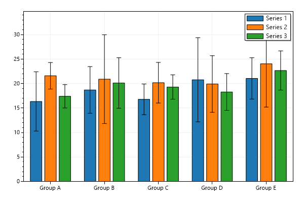

<h3 class='mt-5' id='bars-with-y-offsets'>Bars with Y Offsets</h3>
<div>By default bar graphs start at 0, but this does not have to be the case. Y offsets can be defined for each bar. When Y offsets are used, values represent the height of the bars (relative to their offsets).</div>
<pre class='bg-light border rounded p-3'>var plt = new ScottPlot.Plot(600, 400);

double[] values = { 23, 17, 19, 24, 22 };
double[] yOffsets = { -100, -100, -100, -100, -100 };

var bar = plt.AddBar(values);
bar.ValueOffsets = yOffsets;

// adjust axis limits so there is no padding below the bar graph
plt.SetAxisLimits(yMin: -100);

plt.SaveFig("bar_yoffset.png");</pre>
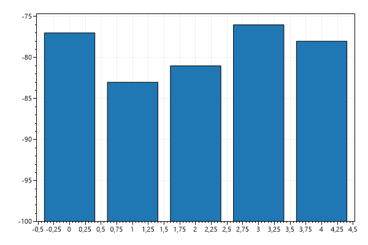

<h3 class='mt-5' id='negative-bar-colors'>Negative Bar Colors</h3>
<div>Bars with negative values can be colored differently than positive ones.</div>
<pre class='bg-light border rounded p-3'>var plt = new ScottPlot.Plot(600, 400);

double[] values = { 23, -17, 19, -24, 22 };

var bar = plt.AddBar(values);
bar.FillColor = Color.Green;
bar.FillColorNegative = Color.Red;

plt.SaveFig("bar_yNegColor.png");</pre>
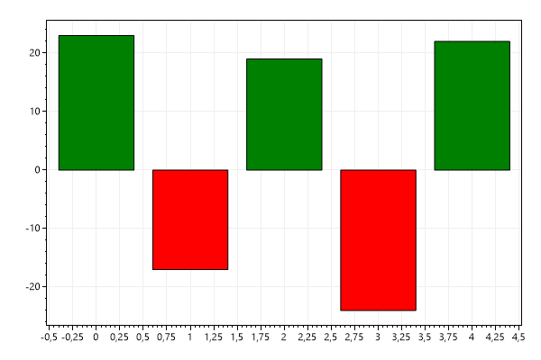

<h3 class='mt-5' id='waterfall-bar-graph'>Waterfall Bar Graph</h3>
<div>Waterfall bar graphs use bars to represent changes in value from the previous level. This style graph can be created by offseting each bar by the sum of all bars preceeding it. This effect is similar to financial plots (OHLC and Candlestick) which are described in another section.</div>
<pre class='bg-light border rounded p-3'>var plt = new ScottPlot.Plot(600, 400);

double[] values = DataGen.RandomNormal(1, 12, 5, 10);
double[] offsets = Enumerable.Range(0, values.Length).Select(x => values.Take(x).Sum()).ToArray();

var bar = plt.AddBar(values);
bar.ValueOffsets = offsets;
bar.FillColorNegative = Color.Red;
bar.FillColor = Color.Green;

plt.SaveFig("bar_waterfall.png");</pre>
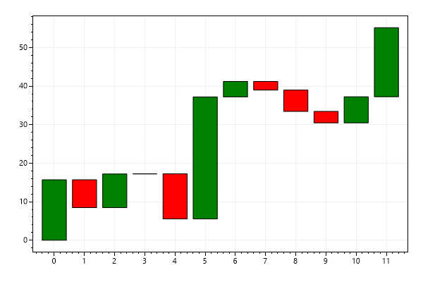

<h3 class='mt-5' id='lollipop-plot-quickstart'>Lollipop Plot Quickstart</h3>
<div>Lollipop plots convey the same information as Bar plots but have a different appearance.</div>
<pre class='bg-light border rounded p-3'>var plt = new ScottPlot.Plot(600, 400);

double[] values = { 26, 20, 23, 7, 16 };
plt.AddLollipop(values);

plt.SaveFig("bar_lollipop.png");</pre>
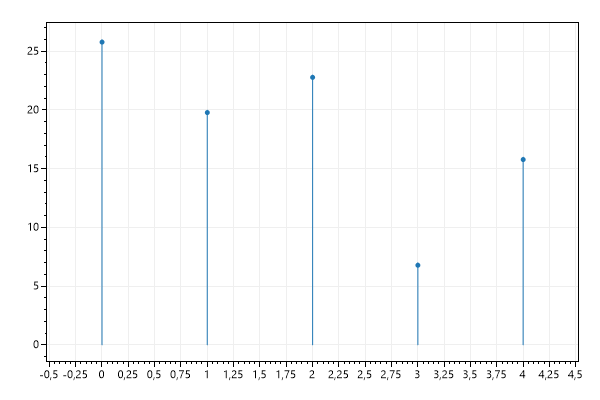

<h3 class='mt-5' id='lollipop-plot-customizations'>Lollipop Plot Customizations</h3>
<div>Lollipop plots can be extensively customized.</div>
<pre class='bg-light border rounded p-3'>var plt = new ScottPlot.Plot(600, 400);

double[] values = { 26, 20, 23, 7, 16 };
var lollipop = plt.AddLollipop(values);
lollipop.Orientation = Orientation.Horizontal;
lollipop.LollipopRadius = 3;
lollipop.BorderColor = Color.Green;
lollipop.LollipopColor = Color.Blue;
lollipop.LollipopRadius = 10;

plt.SaveFig("bar_lollipop_custom.png");</pre>
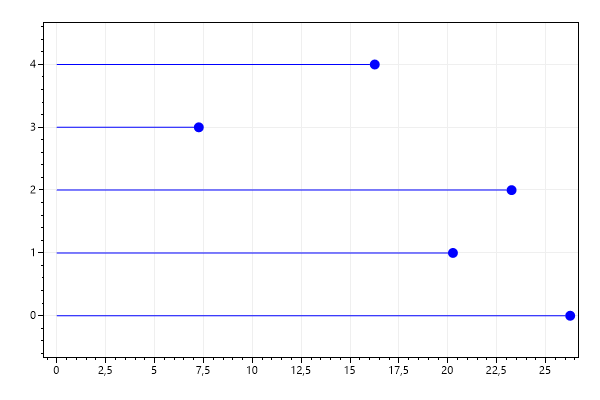

<h3 class='mt-5' id='cleveland-dot-plot'>Cleveland Dot Plot</h3>
<div>Cleveland Dot Plots allow comparing two categories in situations where a Bar Plot may be crowded.</div>
<pre class='bg-light border rounded p-3'>var plt = new ScottPlot.Plot(600, 400);

// Data from https://footystats.org/england/premier-league/home-away-league-table
double[] homeWins = { 12, 17, 16, 18, 18 };
double[] awayWins = { 11, 13, 16, 14, 14 };
string[] labels = { "2015/16", "2016/17", "2017/18", "2018/19", "2019/20" };

var clevelandDot = plt.AddClevelandDot(homeWins, awayWins);
clevelandDot.SetPoint1Style(label: "Home Wins");
clevelandDot.SetPoint2Style(label: "Away Wins", markerShape: MarkerShape.triUp);

plt.XTicks(labels);
plt.Title("British Premier League Champion Home vs Away Wins");
plt.Legend();

plt.SaveFig("bar_cleveland_dot.png");</pre>
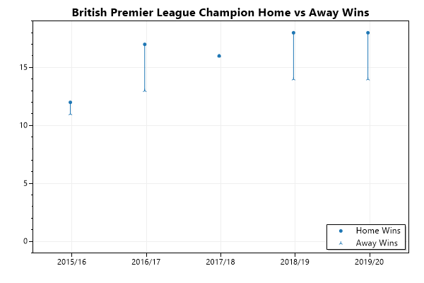

<h3 class='mt-5' id='datetime-bar-plot'>DateTime Bar Plot</h3>
<div>Bars have a default width of 1.0, but when using DateTime axis this means bars are one day wide. To plot DateTime data you may need to manually set the width of a bar to a desired size (in fractions of a day).</div>
<pre class='bg-light border rounded p-3'>var plt = new ScottPlot.Plot(600, 400);

// let's plot 24 hours of data
int pointCount = 24;

// generate some random values
var rand = new Random(0);
double[] values = DataGen.Random(rand, pointCount, 1.0, 2.5);

// space every time point by 1 hour from a starting point
DateTime start = new DateTime(2021, 09, 24, 0, 0, 0);
double[] positions = new double[pointCount];
for (int i = 0; i < pointCount; i++)
    positions[i] = start.AddHours(i).ToOADate();

// display the bar plot using a time axis
var bar = plt.AddBar(values, positions);
plt.XAxis.DateTimeFormat(true);

// indicate each bar width should be 1/24 of a day then shrink sligtly to add spacing between bars
bar.BarWidth = (1.0 / 24) * .8;

// adjust axis limits so there is no padding below the bar graph
plt.SetAxisLimits(yMin: 0);
plt.Layout(right: 20); // add room for the far right date tick

plt.SaveFig("bar_dateTime.png");</pre>
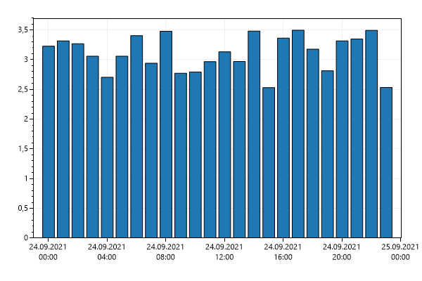

    </div>    </article>  </div></body></html>